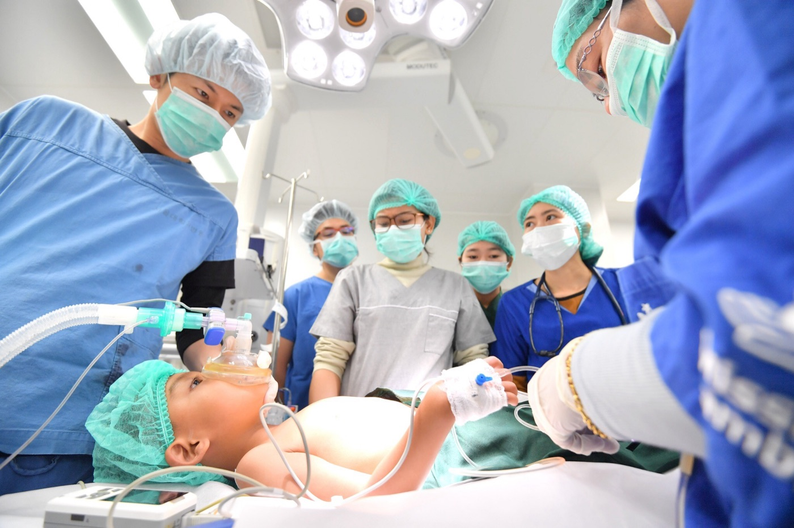
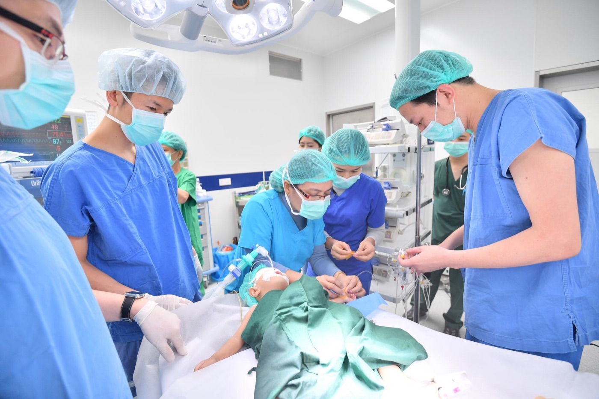
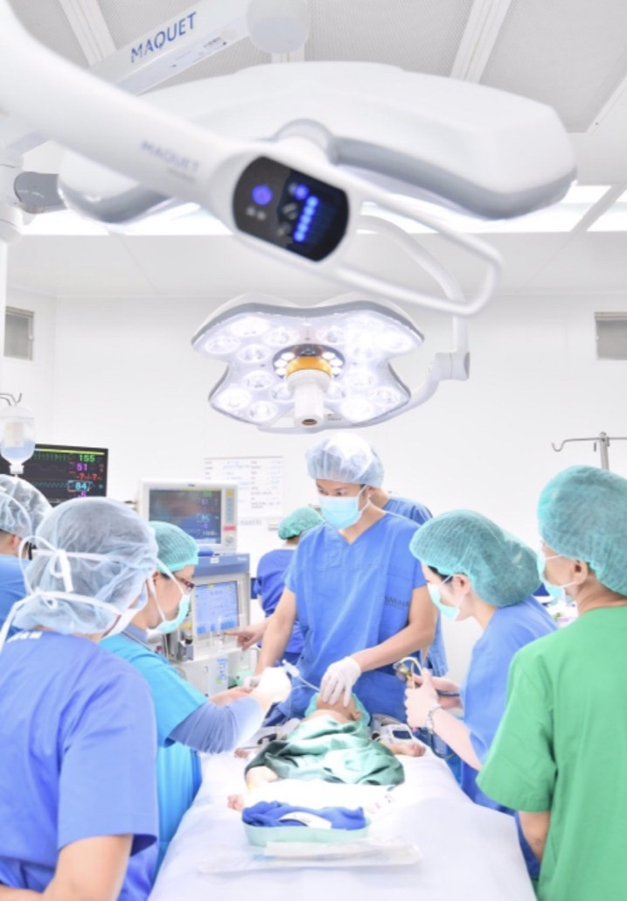

01 — PHILOSOPHY
「痛みのない医療」と「嘘のない医療」を。
麻酔科医の仕事は、患者さんが眠っているあいだ、呼吸と循環という命の根幹を預かることです。その責任の重さが、いまの私の医療のすべての土台になっています。
生死を預かる現場から、
人生を支える医療へ。
国立循環器病研究センターでは、心臓外科手術の麻酔管理と集中治療を担当してきました。血圧が数十秒で崩れる患者さんの傍らで、モニターの数値ひとつに全神経を集中させる日々。そこで身についたのは、「安全は最初から設計しておくもの」という考え方です。
一方で、肥満は心血管疾患の最大級のリスク因子です。私は循環器の現場で、「もっと早く体重に介入できていれば」という症例を何度も見てきました。だからこそ、病気になる前に介入する医療 —— 医療ダイエットという領域を選びました。
そしてもう一つ。美容医療の現場で驚いたのは、痛みへの配慮の少なさでした。麻酔科医だからこそ提供できる「痛くない医療」を広めることが、私のもう一つの使命です。

「人生最後のダイエットを、
一緒に実現させましょう。」
一緒に実現させましょう。」
国境を越えて、子どもの心臓を守る。
「明美ちゃん基金」は、1966年に始まった先天性心疾患の子どもたちを救うための基金です。私はこの活動に関わり、海外での医療支援にも従事してきました。



助かるはずの命を、助けられる場所へ。
先天性心疾患は、適切な時期に適切な手術ができれば救える病気です。しかし医療資源の乏しい地域では、その「適切」が届きません。心臓血管麻酔を専門とする医師として、その現場に立ち会ってきました。
海外での医療支援活動
国立循環器病研究センターでの全身管理の経験を活かし、海外での医療支援活動に長年従事。文化も設備も異なる環境で、限られた条件のなかで最善の安全を組み立てる経験は、いまの診療の礎になっています。